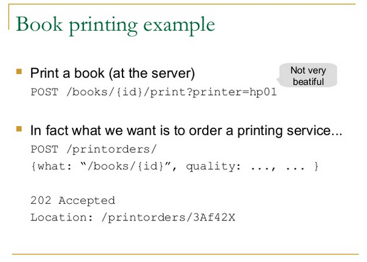

当 Backbone.js 遇上非 CRUD API
最近使用 Backbone.js 开发客户端时发现了一个看似很小，实则非常麻烦的问题：
如何与非 CRUD 式的 RESTFul API 交互。
举个例子，有一个活动 activity 模型，它可以被开启或者停止，有两种解决方案：
- 使用 put 或者 patch，比如
/service/activities/:id并传递参数{status: :active} - 使用额外的 endpoint, 比如
/service/activities/:id/active
如果使用第一种方式，那么就是标准的 CRUD 式的 API，Backbone.js 默认就支持。
但是实际上开启一个活动是一个比较大的动作，可能需要调用其他模块的功能，并不是简单的改一个字段。
因此从 api 设计的角度我是倾向于使用第二种方式的。可是奇怪的是关于 Backbone.js 调用 CRUD 以外 的 API 的文章非常少，
我翻遍 google 就勉强找到了这篇。通过临时改变 model 的 url 属性来实现的。 并没有太让我满意。
正好晚上向 vincent 请教了一下这个问题，因为讨论的重点是 api 设计而不是 backbone 的具体实现，反而开阔了我的思路。
重新复习了一下 RESTful 的相关知识，发现了一个常见误区：
最常见的一种设计错误，就是URI包含动词。因为”资源”表示一种实体，所以应该是名词，URI不应该有动词，动词应该放在HTTP协议中。
对于这个观点争论不少，毕竟类似于 /service/activities/:id/active 这样的设计还是很常见的。 这个 AOE 范围有点大。。。stackoverflow上有个讨论可以参考。
其中我比较赞同的一点是：
In general, when you think you need more verbs, it may actually mean that your resources need to be re-identified.
另外， 这里 提出的三种解决方案也可以参考。
举个例子：

你是想打印一本书，还是发起一个打印的订单请求？
一样的道理，我是要激活一个活动，还是发起一个激活活动的请求？
这个例子中，使用了名词代替动词。一旦变成了名词，我立马想到可以新建一个 model。
这下，只要创建一个 Backbone.js 的模型 startActivity, 然后把它的 url 指向 /service/activities/:id/start_active
或者 /service/activities/:id/activation 这样的名词形式的 url 就行了。
当发起请求后（激活由于业务逻辑的限制，未必就会成功），后续的逻辑就可以都放在这个 startActivity 对象中。
如果激活失败就显示错误信息，成功则通知 activity 模型重新渲染自己的视图。
这样结构更加清晰。这未必是最好的解决方案，但是不失为一种不错的思路。
这次我犯的错误是：
- 一开始总是从 Backbone.js 的方面找问题。想要把 Backbone.js 变成一把锤子来解决这个钉子。
- 对 RESTFul 这样的概念理解还是不够，否则思路也不会这么局限。